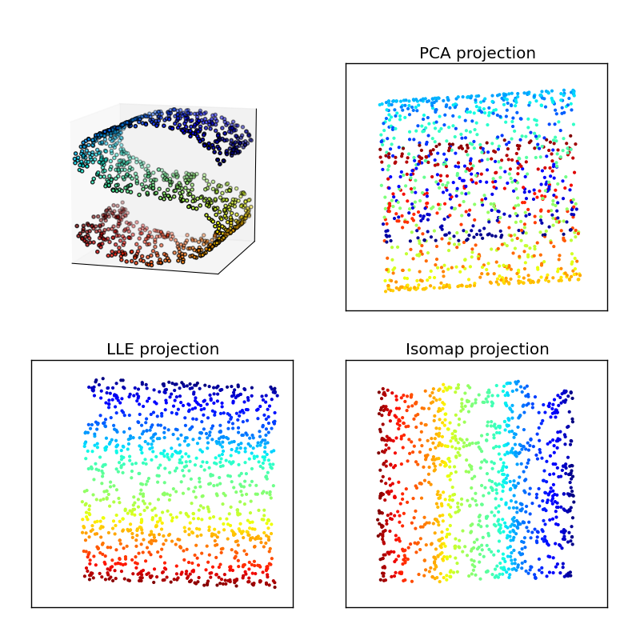

Comparison of PCA and Manifold Learning¶
Figure 7.8
A comparison of PCA and manifold learning. The top-left panel shows an example S-shaped data set (a two-dimensional manifold in a three-dimensional space). PCA identifies three principal components within the data. Projection onto the first two PCA components results in a mixing of the colors along the manifold. Manifold learning (LLE and IsoMap) preserves the local structure when projecting the data, preventing the mixing of the colors.
{kind=link}
# Author: Jake VanderPlas
# License: BSD
# The figure produced by this code is published in the textbook
# "Statistics, Data Mining, and Machine Learning in Astronomy" (2013)
# For more information, see http://astroML.github.com
# To report a bug or issue, use the following forum:
# https://groups.google.com/forum/#!forum/astroml-general
import numpy as np
from matplotlib import pyplot as plt
from matplotlib import ticker
from sklearn import manifold, datasets, decomposition
#----------------------------------------------------------------------
# This function adjusts matplotlib settings for a uniform feel in the textbook.
# Note that with usetex=True, fonts are rendered with LaTeX. This may
# result in an error if LaTeX is not installed on your system. In that case,
# you can set usetex to False.
if "setup_text_plots" not in globals():
from astroML.plotting import setup_text_plots
setup_text_plots(fontsize=8, usetex=True)
#------------------------------------------------------------
# generate the S-curve dataset
np.random.seed(0)
n_points = 1100
n_neighbors = 10
out_dim = 2
X, color = datasets.samples_generator.make_s_curve(n_points)
# change the proportions to emphasize the weakness of PCA
X[:, 1] -= 1
X[:, 1] *= 1.5
X[:, 2] *= 0.5
#------------------------------------------------------------
# Compute the projections
pca = decomposition.PCA(out_dim)
Y_pca = pca.fit_transform(X)
lle = manifold.LocallyLinearEmbedding(n_neighbors, out_dim, method='modified',
random_state=0, eigen_solver='dense')
Y_lle = lle.fit_transform(X)
iso = manifold.Isomap(n_neighbors, out_dim)
Y_iso = iso.fit_transform(X)
#------------------------------------------------------------
# plot the 3D dataset
fig = plt.figure(figsize=(5, 5))
fig.subplots_adjust(left=0.05, right=0.95,
bottom=0.05, top=0.9)
try:
# matplotlib 1.0+ has a toolkit for generating 3D plots
from mpl_toolkits.mplot3d import Axes3D
ax1 = fig.add_subplot(221, projection='3d',
xticks=[], yticks=[], zticks=[])
ax1.scatter(X[:, 0], X[:, 1], X[:, 2], c=color,
cmap=plt.cm.jet, s=9, lw=0)
ax1.view_init(11, -73)
except:
# In older versions, we'll have to wing it with a 2D plot
ax1 = fig.add_subplot(221)
# Create a projection to mimic 3D scatter-plot
X_proj = X / (X.max(0) - X.min(0))
X_proj -= X_proj.mean(0)
R = np.array([[0.5, 0.0],
[0.1, 0.1],
[0.0, 0.5]])
R /= np.sqrt(np.sum(R ** 2, 0))
X_proj = np.dot(X_proj, R)
# change line width with depth
lw = X[:, 1].copy()
lw -= lw.min()
lw /= lw.max()
lw = 1 - lw
ax1.scatter(X_proj[:, 0], X_proj[:, 1], c=color,
cmap=plt.cm.jet, s=9, lw=lw, zorder=10)
# draw the shaded axes
ax1.fill([-0.7, -0.3, -0.3, -0.7, -0.7],
[-0.7, -0.3, 0.7, 0.3, -0.7], ec='k', fc='#DDDDDD', zorder=0)
ax1.fill([-0.3, 0.7, 0.7, -0.3, -0.3],
[-0.3, -0.3, 0.7, 0.7, -0.3], ec='k', fc='#DDDDDD', zorder=0)
ax1.fill([-0.7, 0.3, 0.7, -0.3, -0.7],
[-0.7, -0.7, -0.3, -0.3, -0.7], ec='k', fc='#DDDDDD', zorder=0)
ax1.xaxis.set_major_locator(ticker.NullLocator())
ax1.yaxis.set_major_locator(ticker.NullLocator())
#------------------------------------------------------------
# Plot the projections
subplots = [222, 223, 224]
titles = ['PCA projection', 'LLE projection', 'IsoMap projection']
Yvals = [Y_pca, Y_lle, Y_iso]
for (Y, title, subplot) in zip(Yvals, titles, subplots):
ax = fig.add_subplot(subplot)
ax.scatter(Y[:, 0], Y[:, 1], c=color, cmap=plt.cm.jet, s=9, lw=0)
ax.set_title(title)
ax.set_xticks([])
ax.set_yticks([])
plt.show()